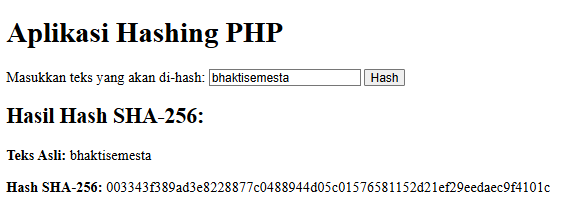

Seiring berkembangnya dunia digital, keamanan data menjadi hal yang sangat penting, terutama dalam teknologi yang menyimpan informasi penting, seperti transaksi keuangan. Salah satu teknologi yang terkenal karena kemampuannya menjaga keamanan data adalah blockchain. Blockchain tidak hanya digunakan untuk cryptocurrency, tetapi juga dalam berbagai aplikasi lainnya yang membutuhkan sistem yang transparan dan aman. Salah satu fitur utama dari blockchain yang menjadikannya sangat aman adalah hashing. Dalam artikel ini, kita akan membahas bagaimana teknik hashing bekerja dalam blockchain dan mengapa teknik ini sangat efektif dalam mencegah serangan brute force.
Apa Itu Hashing?
Hashing adalah proses mengubah data dengan panjang berapa pun menjadi nilai dengan panjang tetap yang disebut hash. Fungsi hash ini menggunakan algoritma matematika untuk mengubah data input (seperti transaksi atau pesan) menjadi serangkaian karakter yang unik. Meskipun fungsi hash ini dapat menghasilkan output yang terlihat acak, prinsip utamanya adalah bahwa hasil dari fungsi hash ini sangat tergantung pada input yang diberikan. Bahkan perubahan terkecil dalam input akan menghasilkan output yang sangat berbeda, yang disebut dengan efek avalanche.
Pada blockchain, setiap blok berisi data transaksi serta hash dari blok sebelumnya, menciptakan rantai yang menghubungkan satu blok dengan blok lainnya. Inilah yang membuat blockchain sangat kuat dalam menjaga integritas data - membuatnya hampir mustahil untuk mengubah informasi dalam satu blok tanpa merusak seluruh struktur blockchain.
Bagaimana Hashing Mencegah Brute Force?
Brute force adalah metode serangan di mana pelaku mencoba semua kemungkinan kombinasi hingga menemukan yang tepat. Jika seseorang ingin mengetahui input asli dari suatu hash, mereka bisa menggunakan serangan brute force untuk menebak nilai yang menghasilkan hash tersebut. Namun, berkat desain fungsi hash yang canggih dalam blockchain, serangan brute force terhadap blockchain sangat sulit dilakukan.
Berikut adalah alasan mengapa hashing di blockchain dapat mencegah serangan brute force:
1. Fungsi Satu Arah (One-Way Function)
Fungsi hash dirancang untuk menjadi one-way atau satu arah. Artinya, sangat mudah untuk menghasilkan hash dari input, tetapi sangat sulit (bahkan hampir mustahil) untuk mengembalikan hash tersebut ke bentuk aslinya. Meskipun kita tahu hasil hash, kita tidak dapat dengan mudah mengetahui data yang digunakan untuk menghasilkan hash tersebut. Hal ini sangat menghalangi serangan brute force karena meskipun pelaku mencoba menebak berbagai kombinasi input, mereka tidak dapat dengan mudah mengetahui apakah kombinasi yang mereka coba menghasilkan hash yang benar.
2. Panjang Output yang Tetap
Hashing menghasilkan output yang memiliki panjang tetap. Misalnya, fungsi hash SHA-256 menghasilkan output sepanjang 256 bit, terlepas dari seberapa besar atau kecil ukuran inputnya. Hal ini membuatnya sulit untuk menebak hasil hash karena setiap input menghasilkan hasil hash yang panjang dan unik, tanpa ada pola yang jelas. Bahkan jika input yang dimasukkan memiliki panjang yang sangat berbeda, hasil hash tetap akan memiliki ukuran yang sama, membuat serangan brute force menjadi lebih sulit.
3. Efek Longsoran (Avalanche Effect)
Efek longsoran adalah fenomena di mana perubahan kecil dalam input (seperti mengganti satu karakter) menyebabkan perubahan besar dalam output hash. Ini berarti bahwa meskipun pelaku serangan brute force hanya membuat perubahan kecil pada input yang mereka coba, mereka akan mendapatkan hash yang sepenuhnya berbeda. Dengan demikian, meskipun pelaku mencoba banyak kemungkinan, mereka tidak akan bisa menebak hash yang benar tanpa melakukan perhitungan besar-besaran, yang memerlukan waktu dan daya komputasi yang sangat tinggi.
4. Mahal secara Komputasi
Algoritma hash yang digunakan dalam blockchain seperti SHA-256 membutuhkan daya komputasi yang cukup besar untuk menghasilkan hash. Jika seseorang ingin mencoba melakukan brute force pada hash, mereka harus menjalankan sejumlah besar perhitungan untuk menebak input yang tepat. Bahkan dengan perangkat keras yang sangat kuat, mencoba semua kemungkinan dengan brute force akan memakan waktu yang sangat lama dan memerlukan sumber daya yang besar, menjadikannya tidak praktis dan tidak efisien.
5. Proof of Work (PoW)
Dalam beberapa blockchain, seperti Bitcoin, hashing digunakan dalam mekanisme Proof of Work (PoW). Untuk memvalidasi transaksi dan menambahkan blok baru ke blockchain, penambang harus menyelesaikan teka-teki matematika yang memerlukan perhitungan hashing. Ini adalah salah satu cara untuk menjaga keamanan dan keaslian blok. Penambang harus menemukan nilai tertentu yang ketika dihitung dengan algoritma hash, memenuhi kriteria tertentu. Proses ini menghalangi serangan brute force karena memerlukan waktu dan usaha komputasi yang besar.
6. Salt dan Teknik Tambahan
Beberapa implementasi blockchain juga menggunakan salt nilai acak yang ditambahkan ke data input sebelum di-hash. Teknik ini membantu mencegah serangan rainbow table, yang menggunakan tabel precomputed hash untuk mempercepat pencarian. Dengan menambahkan salt, setiap input menghasilkan hash yang unik, meskipun input yang diberikan identik. Ini memperkuat pertahanan terhadap serangan brute force.
Output dari program ini adalah hash unik dari input yang diberikan, dan meskipun kita mengubah sedikit input, output hash akan sangat berbeda.
Contoh Teknik Hashing dalam PHP
Untuk memberikan gambaran lebih jelas tentang cara kerja hashing, berikut adalah implementasi teknik hashing menggunakan PHP dengan algoritma SHA-256
Output dari program ini adalah hash unik dari input yang diberikan, dan meskipun kita mengubah sedikit input, output hash akan sangat berbeda.
Contoh Teknik Hashing dalam Python
Keamanan Tak Terlihat: Hashing di Blockchain
Meskipun teknik hashing ini tampak sederhana, keamanan yang dihasilkan dari hashing di blockchain sangatlah kuat dan tak terlihat Hashing tidak hanya melindungi setiap transaksi dan blok dalam blockchain, tetapi juga menyediakan lapisan perlindungan yang membuat data sulit untuk dimodifikasi. Sistem ini berfungsi di belakang layar, memberikan rasa aman tanpa banyak sorotan. Dengan memanfaatkan algoritma hash yang efisien dan efektif, blockchain menciptakan sistem yang sangat tangguh terhadap ancaman digital seperti serangan brute force.
Kesimpulan
Teknik hashing adalah salah satu pilar utama yang membuat blockchain begitu aman. Dengan kemampuan untuk mengubah data menjadi format yang tidak dapat diubah atau diprediksi, serta berbagai lapisan perlindungan yang diterapkan dalam proses hashing, blockchain dapat menjaga data tetap aman dan tidak terpengaruh oleh serangan brute force. Meskipun serangan brute force adalah ancaman dalam teori, blockchain dengan teknik hashing-nya mampu menghadapi ancaman ini dengan cara yang sangat efisien dan praktis.
Keamanan blockchain bukanlah sesuatu yang terlihat oleh pengguna secara langsung, tetapi hashing bekerja di balik layar untuk menjaga integritas sistem dan data. Dengan semakin berkembangnya penggunaan blockchain di berbagai sektor, teknik hashing akan tetap menjadi kunci utama dalam menjaga keamanan data dari ancaman digital.